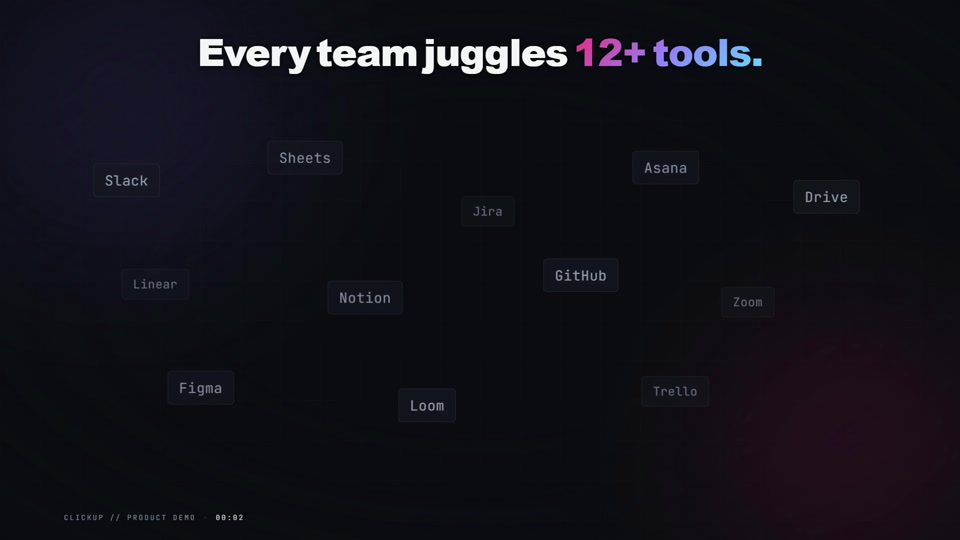
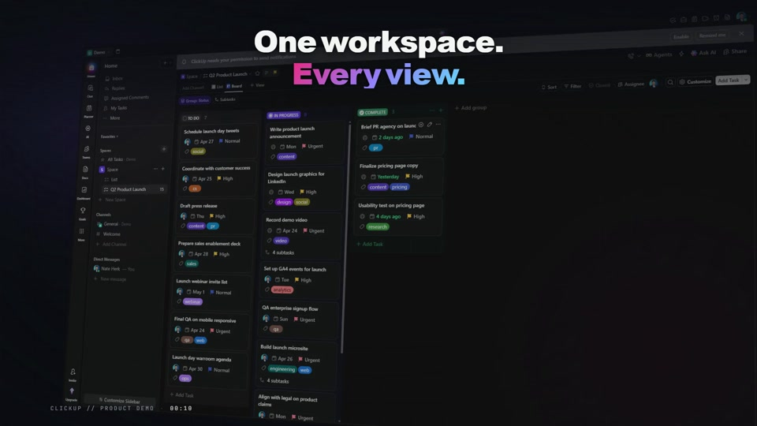
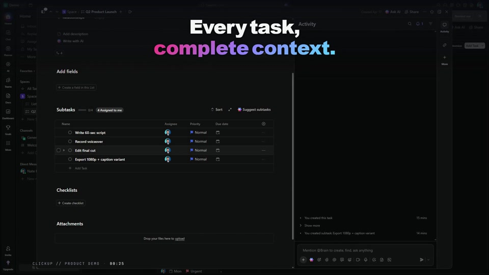
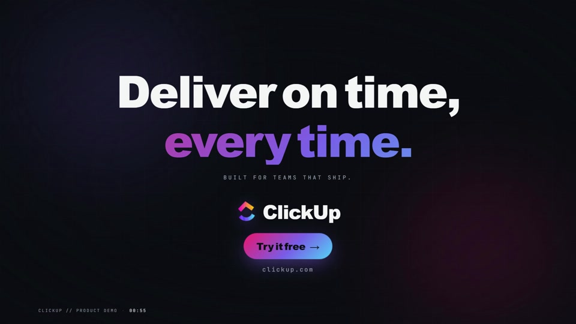
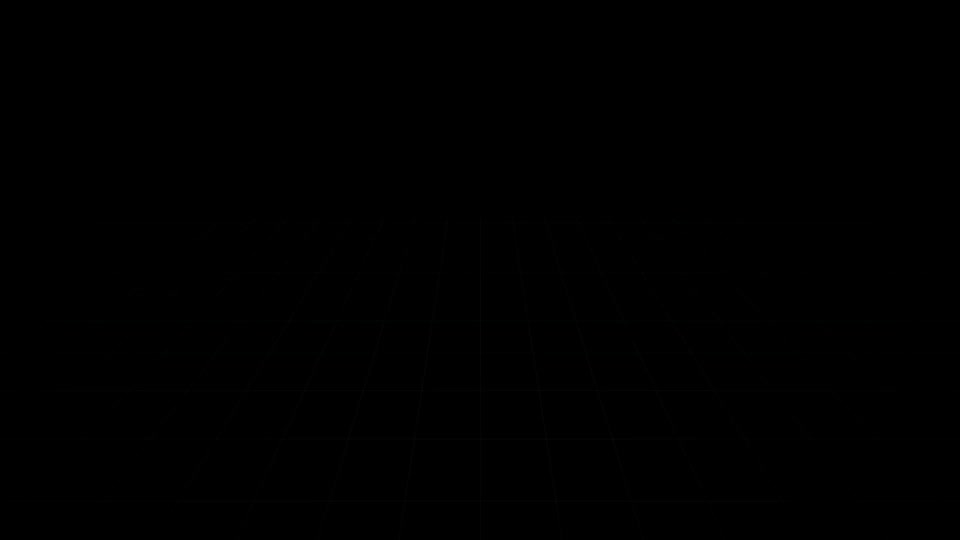

🎥 Casos de estudo em vÃdeo
Dois promos já entregues do kit. Assista primeiro, depois volte e leia cada seção abaixo com os exemplos na cabeça.
clickup-demo (60s)
Demo SaaS com uso pesado de blocos do registry e shader transitions.
linear-promo-30s (30s)
Promo estilo Linear/Infinite Payments — tight cuts, chrome typography, signature transitions.
video-projects/clickup-demo/ e
video-projects/linear-promo-30s/.
Abra o index.html para ver como foi construÃdo.
📖 Walkthrough passo a passo
Para aprender e modificar, leia o guia completo com estrutura de arquivos, explicação da timeline mestre, anatomia de uma sub-composição e 8 passos para adaptar à sua marca:
docs/COMO-MODIFICAR-linear-promo.md →ðŸ—ï¸ Estrutura do SaaS promo
A arquitetura de 5 beats vende produto em 30-60s: hook → problema → solução → prova → CTA. Quebrar sem motivo forte é desperdÃcio de produção.
â±ï¸ Distribuição em 30s
Hook: padrão interrompido, visual forte, pergunta.
Problema: concreto, especÃfico. Dor que o público sente.
Solução: produto em ação. 2-3 features principais mostradas.
Prova: logos, números, depoimento, review.
CTA: URL, action verbal, outro hold.
🔠Estudo de frames — clickup-demo (60s, beats dobrados)

Pattern interrupt inicial

Dor do público

Produto em ação

Social proof, depoimentos

URL + outro hold
Frames extraÃdos com ffmpeg -ss [tempo] -frames:v 1.
🔠Estudo de frames — linear-promo-30s (tight 30s)




📦 Blocos do registry
38 blocos prontos no catálogo Hyperframes. Para SaaS promo, os essenciais são os de social proof (x-post, spotify-card, yt-lower-third) e UI showcase (app-showcase, ui-3d-reveal).
📦 Instalar um bloco
# Browse catalog
npx hyperframes catalog --type block
# Install
npx hyperframes add x-post
npx hyperframes add ui-3d-reveal
npx hyperframes add app-showcase
# O bloco vai para compositions/ com props documentados📱 Social proof
x-post, tiktok-follow, reddit-post, spotify-card, instagram-follow
ðŸ–¥ï¸ UI showcase
app-showcase, ui-3d-reveal, macos-notification, yt-lower-third
💫 Shader transitions
Transições GPU dão sensação cinemática. Cada shader tem feeling diferente e motivação narrativa distinta.
whip-pan
Transição fast-paced com motion blur. Ideal entre scenes de ritmo acelerado.
cARCKHÉtic-zoom
Zoom dramático em elemento central. Ideal para revelação de produto hero.
glitch
RuÃdo digital. Pattern break, usado com moderação — 1-2 vezes no vÃdeo máximo.
sdf-iris
Abertura/fechamento tipo lente de câmera. Elegante para intro ou CTA.
💡 Signature transition
Escolha UMA transição como signature da sua marca e use consistentemente. VÃdeo com 6 transições diferentes vira confuso.
âœ’ï¸ Kinetic typography
Chrome gradient + halo glow é a signature estética do MOTION_PHILOSOPHY. Texto flat preto-sobre-branco é default cansado; chrome dá 80% do caminho para "parece profissional".
💎 CSS para chrome gradient
.chrome-text {
background: linear-gradient(180deg,
#f8fafc 0%,
#cbd5e1 45%,
#64748b 55%,
#94a3b8 100%);
-webkit-background-clip: text;
background-clip: text;
-webkit-text-fill-color: transparent;
text-shadow: 0 0 30px rgba(168, 202, 255, 0.4);
filter: drop-shadow(0 2px 8px rgba(0, 0, 0, 0.4));
}💡 Anime o gradiente
Para efeito shimmer, anime background-position de -100% a 100% em 1.5s ease-in-out. Simula reflexo de luz.
💤 Outro breathing
Hold de 4-6s no final com logo + URL, sem movimento. VÃdeo sem outro parece cortado. Com hold suficiente, CTA fica na memória.
🎬 Outro do Infinite Payments (referência)
âš ï¸ Erros comuns
- ✗Hold de 1-2s — não dá tempo de absorver CTA
- ✗Outro animado demais — distrai do CTA
- ✗Sem URL — espectador sem ação a tomar
🳠Render archival com docker
Para projetos premium onde cliente quer garantia de reprodutibilidade, use render em container Docker. Mesmo comando = mesmo byte-output, mesmo em 2 anos.
🎬 Comando de render archival
npx hyperframes render \
--quality high \
--docker \
--fps 30 \
--output renders/final-archival.mp4Quality high = CRF 15 (ultra-limpo). Docker garante ambiente consistente entre máquinas.
📊 Quando usar
- •Entregas para clientes que arquivam assets
- •Projetos legais/regulatórios
- •Campaigns que podem ser reativadas/atualizadas
- •Seu portfolio (você vai querer replicar depois)
📋 Resumo do Módulo
Próximo Módulo:
3.2 - Projeto Final Integrado (landing + deck + vÃdeo)